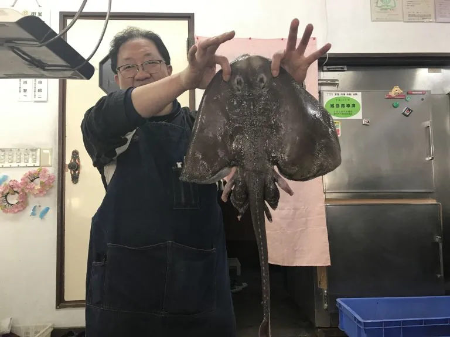
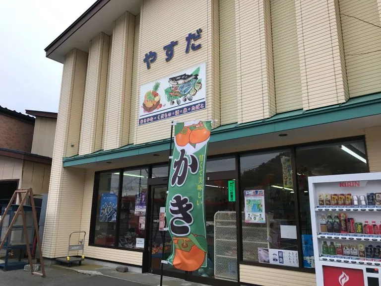

ABOUT THE SHOP
このお店のこと。
長年の海産物の取り扱いで培った知識を生かし、魚に合った料理方法も伝えるというお店です。日々の買い物や、三石の海の幸を知りたいときの入口になります。
出会える味、もの、サービス。
日高沖の鮮魚
その日の魚は入荷次第。欲しい魚がある場合は来店前の確認を。
料理方法の相談
現サイトでは、魚に合う調理方法を案内できると紹介されています。
PHOTO JOURNAL
写真でのぞく、お店の魅力。


写真は現サイトの店舗紹介から保存したものです。撮影当時の内容で、現在の外観・商品・提供状況とは異なる場合があります。写真を押すと大きく表示します。